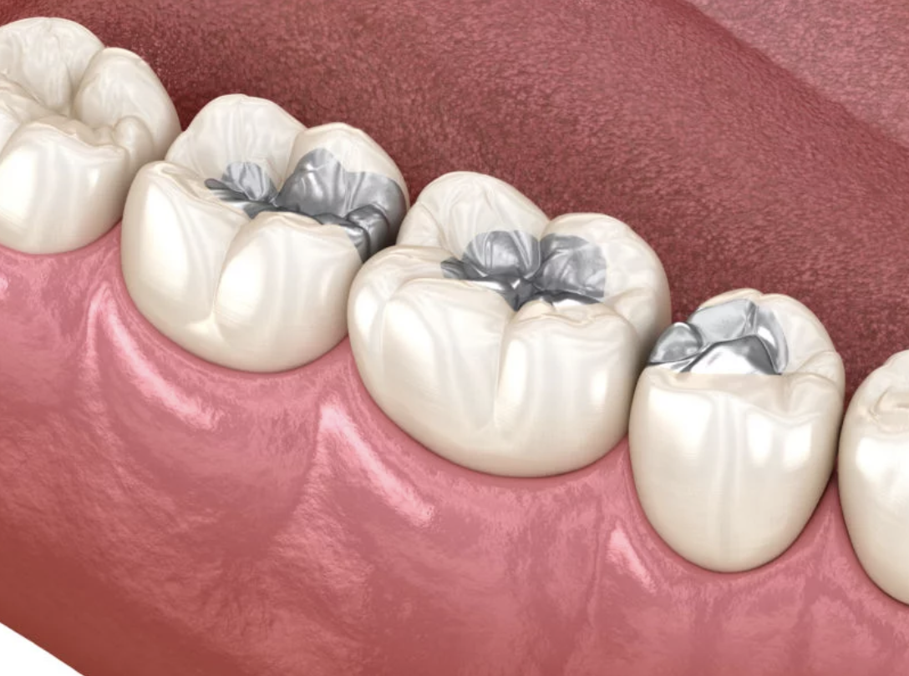

Amalgamas
Amalgamas| La amalgama dental es un material común que se usa para rellenar las caries. A veces llamada "relleno de plata", es una mezcla de mercurio, plata, cobre, estaño y zinc que se utiliza para rellenar las caries en los dientes. | ||
|  Imagen representativa sacada de Clínica Dental Galindo |
||
| La principal ventaja de la amalgama frente al composite es que ofrece una mayor durabilidad; los empastes de composite filtran con mayor facilidad y se tiñen o amarillean.Son demasiado útiles cuando existen caries grandes o otras que ya llegan a afectar los molares y premolares los cuales son los que ejercen mas presion y fuerza en la boca. |